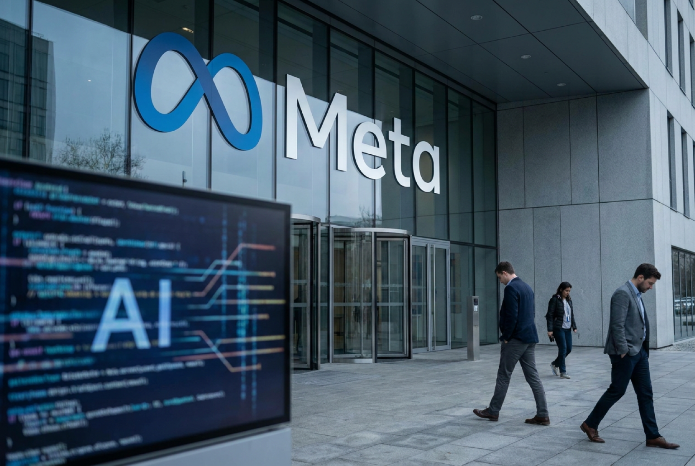

Meta Employees Began Receiving Layoff Notices as AI Restructuring Accelerates
Meta employees began receiving layoff notices this week as the company continued restructuring parts of its workforce around expanding artificial intelligence initiatives and long-term infrastructure investments.
According to Reuters and several technology-focused business outlets, the latest reductions affected employees across multiple teams, including portions of Meta's Reality Labs division and operational support functions. Reports indicated that notices began reaching workers through internal systems and company email channels as the restructuring process accelerated.

Meta has not publicly released a full breakdown of affected departments or total job reductions tied to the latest round of cuts. However, executives have repeatedly emphasized that artificial intelligence has become the company's top strategic priority as competition intensifies across the technology sector.
Chief Executive Officer Mark Zuckerberg has described AI as central to Meta's future products and advertising systems. During recent earnings commentary, Zuckerberg said the company plans to continue investing heavily in AI infrastructure, including advanced chips, large-scale data centers, recommendation systems, and generative AI tools integrated into Facebook, Instagram, WhatsApp, and Threads.
Reuters previously reported that Meta expects capital expenditures tied largely to AI infrastructure to rise significantly as the company competes more aggressively with rivals including OpenAI, Google, and Microsoft in the rapidly expanding AI market.
How the Restructuring Fits Into Meta's Broader Strategy
The latest layoffs follow several years of broader restructuring at Meta. Beginning in 2022, the company eliminated tens of thousands of positions during what Zuckerberg referred to as Meta's "Year of Efficiency," a sweeping effort aimed at lowering expenses and streamlining operations after years of rapid expansion.
CNBC and The Wall Street Journal previously reported that Meta's earlier cost-cutting measures included reductions across recruiting, business operations, and experimental projects. Current restructuring efforts appear more closely tied to reallocating resources toward AI-focused engineering and infrastructure priorities.
According to reporting from Bloomberg and The Information, Meta has increased internal emphasis on generative AI development, custom AI chips, and recommendation systems supporting both advertising and consumer-facing products.
Broader Tech Industry Impact
The restructuring is also being closely watched across the wider technology industry. Companies including Amazon, Google, and Microsoft have similarly expanded AI hiring and infrastructure spending while reducing headcount in selected divisions over the past two years.
Industry analysts say many firms are redirecting budgets toward AI computing capacity and technical specialists while reevaluating operational, recruiting, and legacy support roles.
For workers, the latest layoffs add to ongoing uncertainty across parts of the technology labor market. At the same time, hiring demand for experienced AI engineers, machine learning researchers, and infrastructure specialists remains relatively strong.
What Happens Next
Meta has not indicated whether additional restructuring phases are planned, though investors and employees are expected to closely monitor future earnings calls, hiring trends, and executive commentary for signs of continued workforce shifts tied to the company's AI strategy.
Additional updates may emerge if Meta releases further details about affected divisions, severance packages, internal restructuring plans, or expanded AI investment initiatives.
References & Sources
- Reuters — Meta layoffs tied to AI restructuring and workforce changes
- Reuters — Meta increases AI infrastructure spending forecasts
- Meta Investor Relations — Earnings commentary and AI investment updates
- CNBC — Meta "Year of Efficiency" layoffs and restructuring background
- The Wall Street Journal — Reporting on Meta restructuring and technology workforce shifts
- Bloomberg — Meta AI expansion and infrastructure strategy reporting
- The Information — Internal Meta AI restructuring and hiring focus coverage